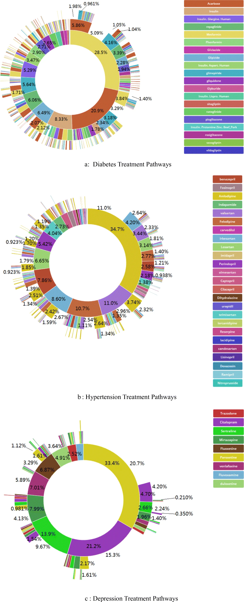

Loading required package: DBI6 Miscellaneous Grabbag
This section is for small articles or to answer questions in class.
6.1 How to Store Passwords
A warning: do not store passwords in your code. It is a major security risk.
The key to avoiding this is to store the password where your machine can access it, but is not part of your code base. (If you are more advanced, you can store the password in your project directory, but make sure it is in your .gitignore).
There are multiple ways to store passwords securely:
- Store them as an Environment Variable on your machine
- Use a global
.Renvironfile to store it outside of your code: https://rstats.wtf/r-startup.html#renviron - Store them in a secure password manager / keyring (see below).
6.1.1 What are environment variables?
These are variables that can be seen by all applications, including R/RStudio. They are not stored within code, but as variables in memory. One of the ones you might have had to struggle wiht is JAVA_HOME, whih is where you set a Java installation.
We can set environment variables directly, or we can specify them in a file called .Renviron that lives in our home directory.
We will use them as a more secure way to store our passwords. We choose the user scope so that it is saved in our home directory, not the project directory. This way, we can protect our password from prying eyes and bots.
usethis::edit_r_environ(scope="user")☐ Edit '/Users/tladera2/.Renviron'.☐ Restart R for changes to take effect.Add the following to your .Renviron file:
CLASS_DB_PASSWORD="IntroSQL"You may have to reopen the project for it to be loaded in your environment variables. We can now load the password using Sys.getenv().
Sys.getenv("CLASS_DB_PASSWORD")[1] "IntroSQL"You can also set the environment variable using Windows Control Panel or PowerShell: https://phoenixnap.com/kb/windows-set-environment-variable - the easiest way to do it is probably the control panel method.
There will probably be some sort of authentication process involved in connecting to your databases at Fred Hutch. I’ll add more info when I know more.
There is much more about storing passwords and other secrets such as API keys here: https://cran.r-project.org/web/packages/httr/vignettes/secrets.html.
6.2 Databases versus Data Warehouses
graph TD A[(Database)] --ETL--> D B[(Database)] --ETL--> D C[(Database)] --ETL--> D D[(Data Warehouse)]
- Databases: made for data collection, or transactional processing - these systems are made to be updated by multiple sources at once. For example, a collection form that feeds into a database can be submitted by multiple people at once. If you need the latest records, you want to pull from the database.
- Data Warehouse: Aggregated data from many databases, made for data analysis, or analytical processing. They are usually updated on a nightly basis, taking summary data from each database.
We will be mostly doing analytical querying, as if our data is stored in a data warehouse.
6.3 What’s the deal with the ; (semicolon)?
We use the ; to specify the end of a SQL statement. It is mostly important if you write SQL statements in multiple parts, which we will not do in class.
6.4 Keep in Mind: Beware the Smart Quotes
Beware cutting and pasting code from Microsoft Word
Microsoft products such as Word, will transform double quotes " into what are called smart quotes: “”. This is bad for us, because it breaks our code.
"This is the Original String"will transform into:
“This is the Original String”It is very hard to see the difference between these, but if you cut and paste the bottom one (from a word document), your code will not run. That’s because the smart quotes aren’t double quotes, which you need to specify a string.
Just be aware that you might have to fix these quotes if you’re cutting / pasting from a Microsoft product (although google is also guilty of this).
Oftentimes, you can disable this in Word/Google Docs, or be prepared to replace the smart quotes with double quotes. :::
6.5 Dumping a Query Straight into memory
We can add a line to our SQL code cell to save the output of our SQL query
```{sql}
#| connection: "con"
#| output.var: person
SELECT * FROM person
LIMIT 10;
```If we run this, we will save the output into the object called person:
SELECT * FROM person
LIMIT 10;We can work with this as a normal R object now:
person person_id gender_concept_id year_of_birth month_of_birth day_of_birth
1 6 8532 1963 12 31
2 123 8507 1950 4 12
3 129 8507 1974 10 7
4 16 8532 1971 10 13
5 65 8532 1967 3 31
6 74 8532 1972 1 5
7 42 8532 1909 11 2
8 187 8507 1945 7 23
9 18 8532 1965 11 17
10 111 8532 1975 5 2
birth_datetime race_concept_id ethnicity_concept_id location_id provider_id
1 1963-12-31 8516 0 NA NA
2 1950-04-12 8527 0 NA NA
3 1974-10-07 8527 0 NA NA
4 1971-10-13 8527 0 NA NA
5 1967-03-31 8516 0 NA NA
6 1972-01-05 8527 0 NA NA
7 1909-11-02 8527 0 NA NA
8 1945-07-23 8527 0 NA NA
9 1965-11-17 8527 0 NA NA
10 1975-05-02 8527 0 NA NA
care_site_id person_source_value gender_source_value
1 NA 001f4a87-70d0-435c-a4b9-1425f6928d33 F
2 NA 052d9254-80e8-428f-b8b6-69518b0ef3f3 M
3 NA 054d32d5-904f-4df4-846b-8c08d165b4e9 M
4 NA 00444703-f2c9-45c9-a247-f6317a43a929 F
5 NA 02a3dad9-f9d5-42fb-8074-c16d45b4f5c8 F
6 NA 02fbf1be-29b7-4da8-8bbd-14c7433f843f F
7 NA 0177d2e0-98f5-4f3d-bcfd-497b7a07b3f8 F
8 NA 07a1e14d-73ed-4d3a-9a39-d729745773fa M
9 NA 0084b0fe-e30f-4930-b6d1-5e1eff4b7dea F
10 NA 0478d6b3-bdb3-4574-9b93-cf448d725b84 F
gender_source_concept_id race_source_value race_source_concept_id
1 0 black 0
2 0 white 0
3 0 white 0
4 0 white 0
5 0 black 0
6 0 white 0
7 0 white 0
8 0 white 0
9 0 white 0
10 0 white 0
ethnicity_source_value ethnicity_source_concept_id
1 west_indian 0
2 italian 0
3 polish 0
4 american 0
5 dominican 0
6 english 0
7 irish 0
8 irish 0
9 english 0
10 english 06.6 Query Plans
All database systems will translate your SQL query into a concrete query plan: this shows step by step, how the engine will execute your query. With DuckDB, we can use EXPLAIN.
Note that the output of EXPLAIN is not a table, which is why I’m using an R chunk to execute the SQL.
statement <- "EXPLAIN SELECT po.person_id, c.concept_name, po.procedure_date
FROM procedure_occurrence as po
INNER JOIN concept as c
ON po.procedure_concept_id = c.concept_id
ORDER BY po.procedure_date;"
dbGetQuery(con, statement)physical_plan
┌───────────────────────────┐
│ PROJECTION │
│ ──────────────────── │
│__internal_decompress_integ│
│ ral_integer(#0, 1) │
│ #1 │
│ #2 │
│ │
│ ~0 rows │
└─────────────┬─────────────┘
┌─────────────┴─────────────┐
│ ORDER_BY │
│ ──────────────────── │
│ po.procedure_date ASC │
└─────────────┬─────────────┘
┌─────────────┴─────────────┐
│ PROJECTION │
│ ──────────────────── │
│__internal_compress_integra│
│ l_usmallint(#0, 1) │
│ #1 │
│ #2 │
│ │
│ ~38,448 rows │
└─────────────┬─────────────┘
┌─────────────┴─────────────┐
│ PROJECTION │
│ ──────────────────── │
│ person_id │
│ concept_name │
│ procedure_date │
│ │
│ ~38,448 rows │
└─────────────┬─────────────┘
┌─────────────┴─────────────┐
│ HASH_JOIN │
│ ──────────────────── │
│ Join Type: INNER │
│ │
│ Conditions: ├──────────────┐
│ procedure_concept_id = │ │
│ concept_id │ │
│ │ │
│ ~38,448 rows │ │
└─────────────┬─────────────┘ │
┌─────────────┴─────────────┐┌─────────────┴─────────────┐
│ SEQ_SCAN ││ SEQ_SCAN │
│ ──────────────────── ││ ──────────────────── │
│ Table: ││ Table: concept │
│ procedure_occurrence ││ Type: Sequential Scan │
│ ││ │
│ Type: Sequential Scan ││ Projections: │
│ ││ concept_id │
│ Projections: ││ concept_name │
│ procedure_concept_id ││ │
│ person_id ││ Filters: │
│ procedure_date ││ concept_id>=4010253 AND │
│ ││ concept_id<=44805732 │
│ ││ │
│ ~37,409 rows ││ ~444 rows │
└───────────────────────────┘└───────────────────────────┘Using EXPLAIN ANALYZE will not only show the query plan, but also how long it takes to execute each step.
statement <- "EXPLAIN ANALYZE SELECT po.person_id, c.concept_name, po.procedure_date
FROM procedure_occurrence as po
INNER JOIN concept as c
ON po.procedure_concept_id = c.concept_id
ORDER BY po.procedure_date;"
dbGetQuery(con, statement)analyzed_plan
┌─────────────────────────────────────┐
│┌───────────────────────────────────┐│
││ Query Profiling Information ││
│└───────────────────────────────────┘│
└─────────────────────────────────────┘
EXPLAIN ANALYZE SELECT po.person_id, c.concept_name, po.procedure_date FROM procedure_occurrence as po INNER JOIN concept as c ON po.procedure_concept_id = c.concept_id ORDER BY po.procedure_date;
┌────────────────────────────────────────────────┐
│┌──────────────────────────────────────────────┐│
││ Total Time: 0.0046s ││
│└──────────────────────────────────────────────┘│
└────────────────────────────────────────────────┘
┌───────────────────────────┐
│ QUERY │
└─────────────┬─────────────┘
┌─────────────┴─────────────┐
│ EXPLAIN_ANALYZE │
│ ──────────────────── │
│ 0 rows │
│ (0.00s) │
└─────────────┬─────────────┘
┌─────────────┴─────────────┐
│ PROJECTION │
│ ──────────────────── │
│__internal_decompress_integ│
│ ral_integer(#0, 1) │
│ #1 │
│ #2 │
│ │
│ 37,409 rows │
│ (0.00s) │
└─────────────┬─────────────┘
┌─────────────┴─────────────┐
│ ORDER_BY │
│ ──────────────────── │
│ po.procedure_date ASC │
│ │
│ 37,409 rows │
│ (0.00s) │
└─────────────┬─────────────┘
┌─────────────┴─────────────┐
│ PROJECTION │
│ ──────────────────── │
│__internal_compress_integra│
│ l_usmallint(#0, 1) │
│ #1 │
│ #2 │
│ │
│ 37,409 rows │
│ (0.00s) │
└─────────────┬─────────────┘
┌─────────────┴─────────────┐
│ PROJECTION │
│ ──────────────────── │
│ person_id │
│ concept_name │
│ procedure_date │
│ │
│ 37,409 rows │
│ (0.00s) │
└─────────────┬─────────────┘
┌─────────────┴─────────────┐
│ HASH_JOIN │
│ ──────────────────── │
│ Join Type: INNER │
│ │
│ Conditions: │
│ procedure_concept_id = ├──────────────┐
│ concept_id │ │
│ │ │
│ 37,409 rows │ │
│ (0.00s) │ │
└─────────────┬─────────────┘ │
┌─────────────┴─────────────┐┌─────────────┴─────────────┐
│ TABLE_SCAN ││ TABLE_SCAN │
│ ──────────────────── ││ ──────────────────── │
│ Table: ││ Table: concept │
│ procedure_occurrence ││ Type: Sequential Scan │
│ ││ │
│ Type: Sequential Scan ││ Projections: │
│ ││ concept_id │
│ Projections: ││ concept_name │
│ procedure_concept_id ││ │
│ person_id ││ Filters: │
│ procedure_date ││ concept_id>=4010253 AND │
│ ││ concept_id<=44805732 │
│ ││ │
│ 37,409 rows ││ 235 rows │
│ (0.00s) ││ (0.00s) │
└───────────────────────────┘└───────────────────────────┘6.7 Apache Iceberg
One transactional database format that is starting to be very important is Apache Iceberg.
6.8 How do we speed things up?
Our main tool for speeding up database searches is Indexing. Creating an index on a column speeds up searching through that particular column.
Database Tuning is as much an art as it is a science. Too many indexes will make the database too big, whereas too few indexes will result in slow performance. This is why we hire database admins. Their work is incredibly important to keeping our data integrity and performing.
6.9 The OMOP Data Model
The database we’ve been using has been rigorously modeled using a data model called OMOP CDM (Common Data Model). OMOP is short for Observational Medical Outcomes Partnership, and it is designed to be a database format that standardizes data from systems into a format that can be combined with other systems to compare health outcomes across organizations.
This is a huge accomplishment, because there are a lot of different pieces of a healthcare system. Not only that, we need standardized vocabularies, and standardized units so that we are comparing the same things across the healthcare systems.
The following figure shows how chronic disesases are treated across (Link to paper) healthcare systems. This could not have been done without converting all of the electronic healthcare data to

Much more info about OMOP is here: OMOP Data Standardization.
dbDisconnect(con)